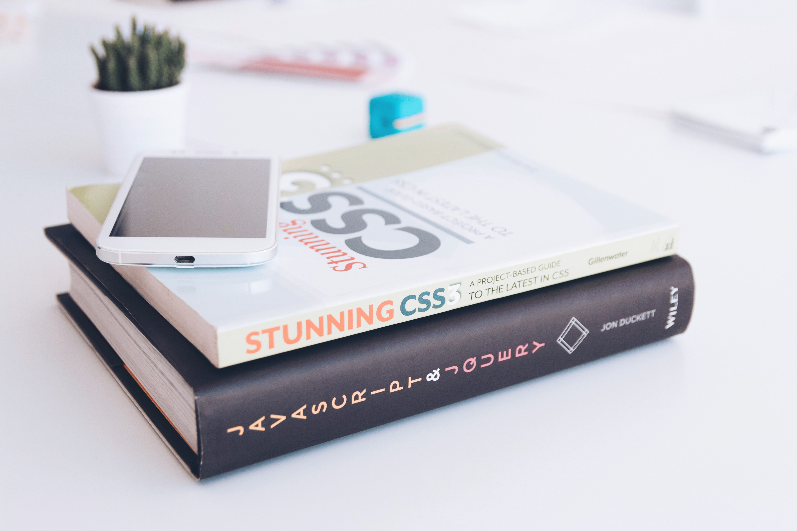
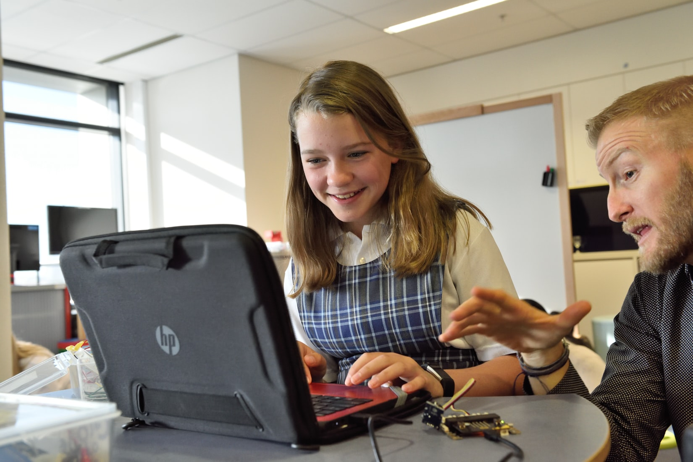

编程是一种技能，可以让我们不断提升和学习新知识。
编程是一门永远学不完的手艺。我们无法掌握所有与编程相关的主题，因为这会涉及太多的内容。如果想要自己不断进步，需要保持开放的思维，不断获取新的知识，并接受无法掌握全部知识的事实，让自己每天都有进步就够了。
可以通过以下三种方式实现这一目标。
日常编码
编码是一项与其他技术一样的技能。想要把它做好，需要大量的练习和努力。没有人会在一觉醒来后就突然变得擅长编码。所有优秀的工程师都夜以继日地工作，以完善他们的编码技能。无论你在做什么项目，用的什么编程语言，都要养成每天编写代码的习惯 —— 重要的是每天都要写代码。
不要只是写代码，尝试阅读其他程序员的代码，与其他程序员讨论代码，并尝试寻找高手来 review 你的代码。编程是一门技术精湛的手艺，不能仅仅通过学习语法规则就能精通这门手艺，只有不断的练习和反思，才能取得好成绩。
学习多种编程语言
大学课程中引入多种编程语言是有原因的，编码知识通过语言进行传播。例如，熟悉 Java 语言的面向对象编程使你更容易理解 Go 语言中的概念，因为一些相同的编码概念适用于这两种语言。

当我们从多种语言中学习到不同的概念时，编程才开始真正地有趣起来。我从 Go 中学到结构体，从 Python 中学到了函数式编程，从 Java 中学到了面向对象编程。将多种语言的特性结合起来无疑有助于我巩固整体思维格局，并使我在编程方面做得更好。不要局限在一个小角落，经常尝试和探索未知的事物，哪怕觉得自己什么都不知道也没关系，毕竟吸收新的信息是我们学习的唯一方式。
人最害怕的不是自己什么都不会，而是自己不知道自己不会。
教导和帮助其他程序员
听说过门徒效应吗？这是一种通过教别人来学习的有趣方式。门徒效应是一种现象，在这种现象中，教授或准备将知识传授给他人可以帮助一个人学习这些知识。
教授一门课程意味着你必须从不同的角度来掌握它，因为你不知道学生已经掌握了多少。因此，你需要假设学生对该主题了解不多，同时意味着你必须从最基础的知识开始教学。而教授基础知识的唯一方法是你要彻底搞懂基础知识。

通过教学来学习可以借鉴小黄鸭调试法。有证据表明，教一个无生命的物体可以提高对所教知识的理解和掌握。
我们可以从小事开始，试着每天帮助一个人：在 GitHub 上挑选一个 issue 并解决它。为了尽可能多地学习和帮助他人，也可以在 SegmentFault 或 StackOverflow 上回答问题。
最后
尽管编程很难掌握，但它非常有趣。问问自己：如果你真的想掌握编程，是否愿意付出额外的努力？我想你已经知道答案了。